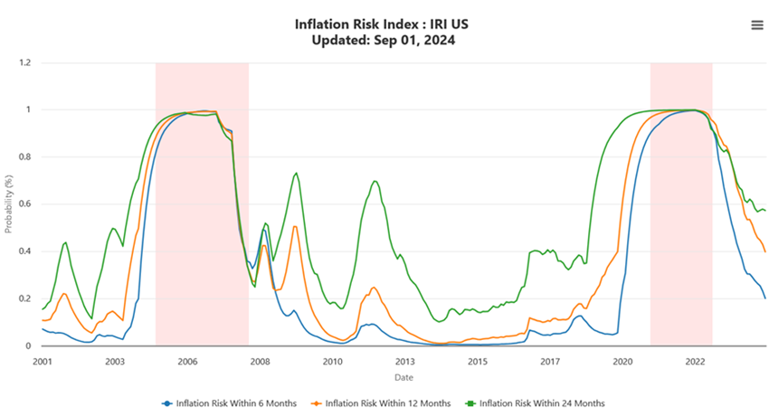
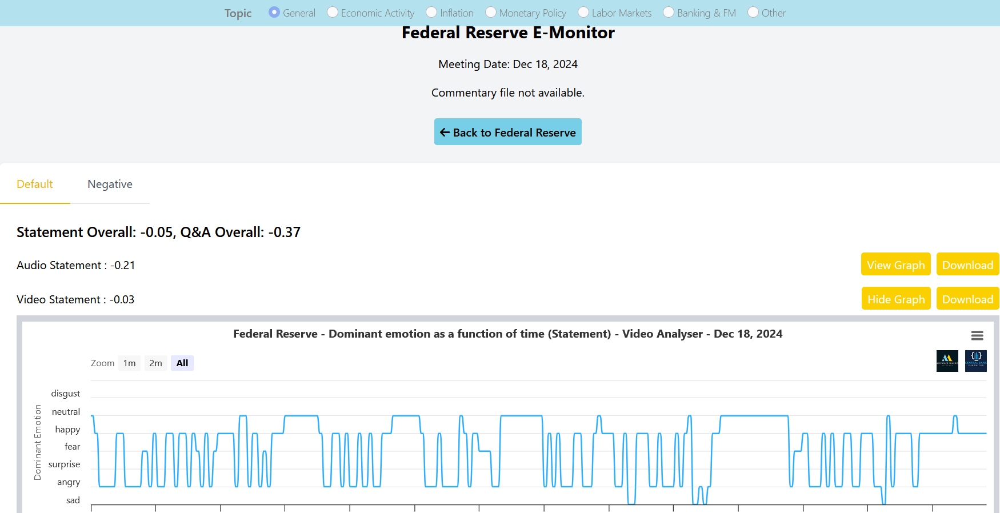
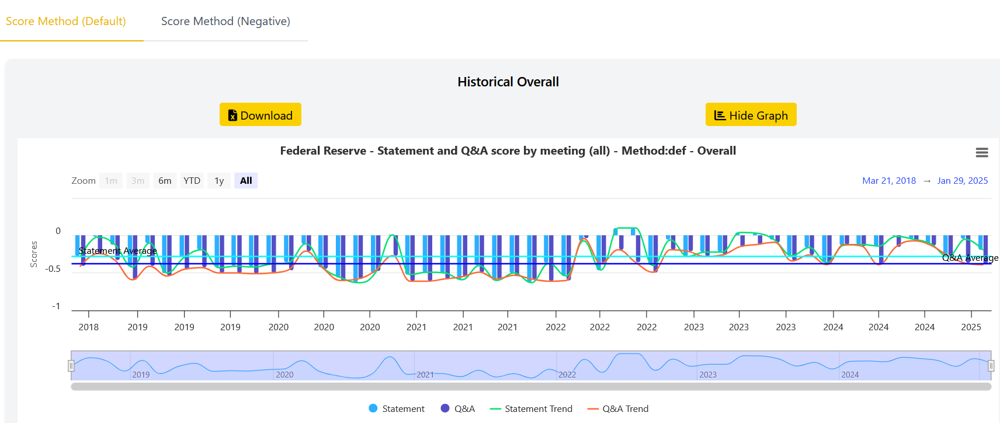
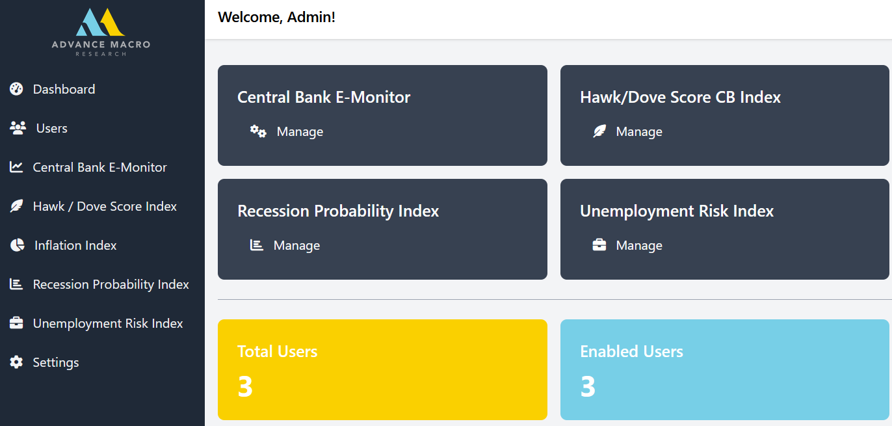

Translate analysis into visuals
Turn model outputs and statistical results into interpretable visual representations.
Project case study · Advance Macro Research
Interactive visual analytics that turn complex economic signals into accessible, decision-oriented views for economists, policymakers, and financial professionals.

01 / The challenge
Macroeconomic analysis brings together a wide range of indicators, statistical models, and communications from central banks. Even when the underlying analysis is valuable, its results can be difficult to explore and interpret in a form that supports timely decisions.
I designed and developed visual analytics experiences that help users examine economic trends, monitor emerging risks, and interpret central bank behavior across different time horizons.
02 / My contributions
Turn model outputs and statistical results into interpretable visual representations.
Communicate sentiment, indicators, and forward-looking risk across multiple time horizons.
Structure information to make it easier to explore, compare, and use in economic decision-making.
03 / Featured products

Communication signals
Visual analytics for central bank press conferences, combining textual, vocal, and visual communication signals to help users examine policy messaging.
Forward-looking indicator
Visualizes unemployment risk across six-, twelve-, and twenty-four-month horizons to support monitoring of labor-market conditions.

Monetary policy sentiment
Uses natural language processing to communicate central bank monetary-policy sentiment and changes in tone over time.

Machine-learning assessment
Visualizes machine-learning-based inflation risk assessments across multiple time horizons, making changes in projected risk easier to follow.
Outcome
The work delivered a collection of visual analytics products that make macroeconomic information more accessible and interpretable—supporting ongoing monitoring and more informed decisions.